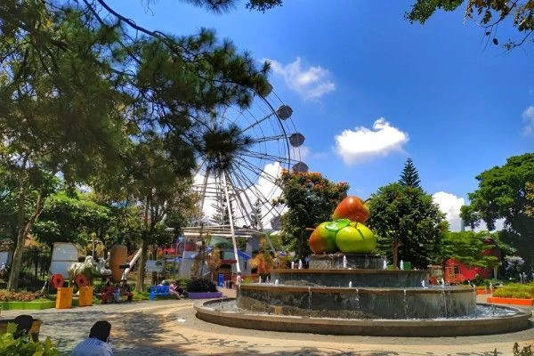
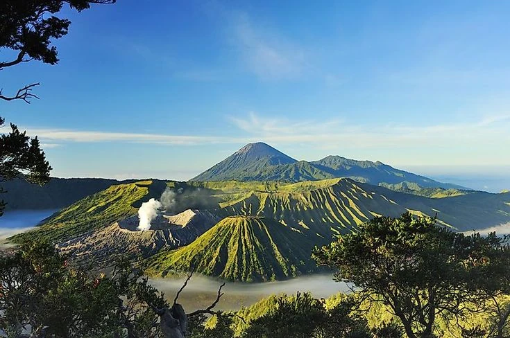
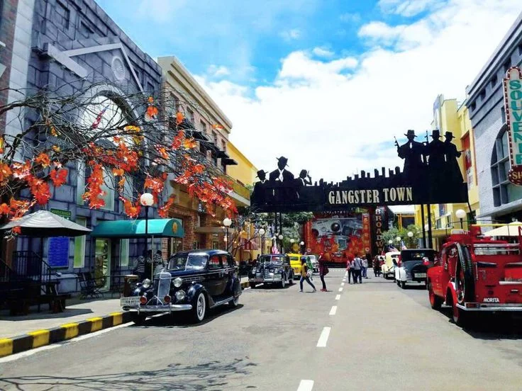
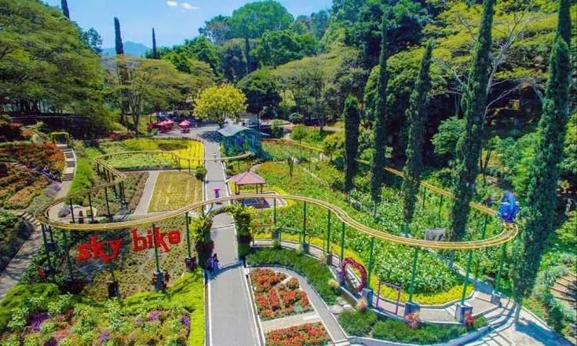
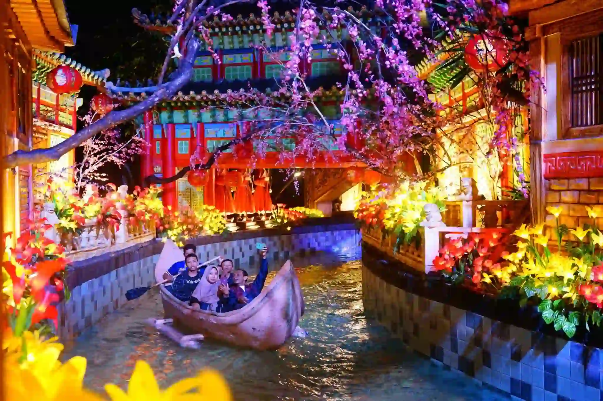
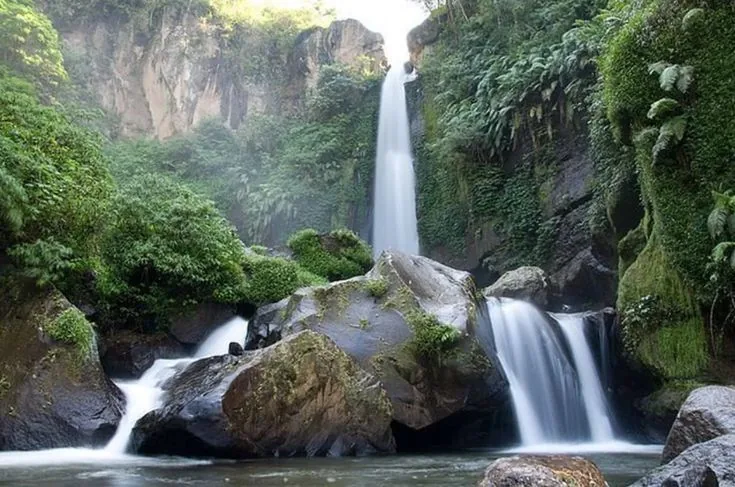
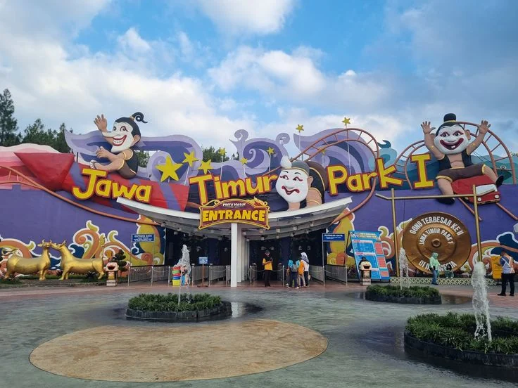

5 Barang Wajib Bawa Saat Liburan ke Bromo
Suhu di Bromo bisa sangat dingin. Pastikan Anda membawa perlengkapan ini agar liburan tetap nyaman dari awal hingga akhir.
Baca SelengkapnyaNikmati perjalanan tak terlupakan mengeksplorasi keindahan alam pegunungan, udara sejuk, dan kesegaran agrowisata kebun apel.
Lihat Paket WisataAlasan terbaik untuk mempercayakan momen liburan berharga Anda bersama agen kami
Penawaran paket wisata terbaik yang pas di kantong tanpa mengurangi fasilitas.
Ditemani oleh kru dan guide lokal yang ramah, berpengalaman, dan informatif.
Kendaraan prima, bersih, dan ber-AC yang dijamin keamanannya selama tour.
Rute perjalanan bisa disesuaikan dengan kebutuhan liburan keluarga Anda.
Temukan paket perjalanan terbaik yang dirancang khusus untuk Anda

Kunjungi destinasi wajib: Petik Apel, Jatim Park 2, dan Alun-alun Kota Batu yang ikonis.

Kejar momen matahari terbit di Bromo, dilanjutkan dengan wisata rekreasi di Kota Batu.

Liburan lengkap: Museum Angkut, Coban Rondo, Petik Strawberry, dan wisata kuliner.
Momen-momen indah dari para wisatawan kami




Temukan jawaban cepat untuk pertanyaan seputar layanan kami
Harga paket kami umumnya sudah meliputi transportasi (BBM & Sopir), tiket masuk wisata sesuai itinerary, air mineral, parkir, dan retribusi wisata. Untuk paket tertentu juga meliputi hotel dan makan (silakan cek detail tiap paket).
Sangat bisa! Kami menyediakan layanan "Private Tour" dimana rute perjalanan sangat fleksibel dan bisa disesuaikan sepenuhnya dengan keinginan destinasi dan ritme liburan Anda.
Pembayaran dilakukan dengan DP (Down Payment) sebesar 30% dari total tagihan sebagai tanda jadi, sisanya dilunasi saat hari H penjemputan. Pembatalan H-3 akan dikenakan potongan biaya sesuai kebijakan perusahaan.
Tips liburan dan kabar terbaru seputar pariwisata Batu Malang
Suhu di Bromo bisa sangat dingin. Pastikan Anda membawa perlengkapan ini agar liburan tetap nyaman dari awal hingga akhir.
Baca Selengkapnya
Jelajahi kelezatan Pos Ketan Legenda dan berbagai jajanan malam yang menghangatkan suasana kota Batu setelah seharian berkeliling.
Baca Selengkapnya
Bingung mau ke mana? Kenali perbedaan setiap taman rekreasi agar sesuai dengan kebutuhan dan umur anggota keluarga Anda.
Baca Selengkapnya